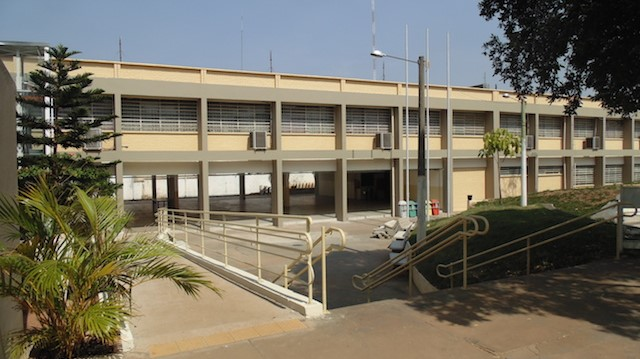
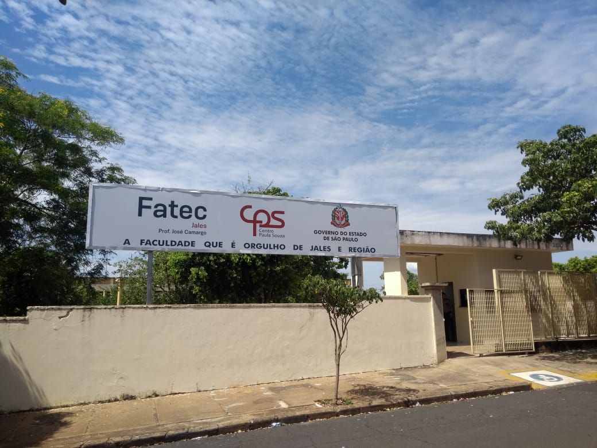
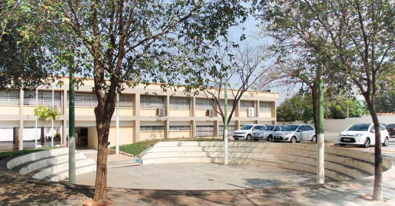

Sobre a Fatec Jales
Nome completo: Faculdade de Tecnologia Prof. José Camargo – Fatec Jales
Endereço: Rua Vicente Leporace, nº 2630, Jardim Trianon, CEP 15.703-116 - Jales/SP
Telefones: (17) 3624-3800 / (17) 3621-6911 / (17) 3632-2239 – CNPJ 62.823.257/0171-76
Responsável pela Instituição: Prof. Me. Tiago Ribeiro Carneiro
Mantenedora: Centro Paula Souza
Endereço: Rua dos Andradas, nº 140, Santa Ifigênia, CEP 01208-000 - São Paulo/SP
Telefone: (11) 3324-3300
Responsável pela Mantenedora: Diretor Superintendente: Clóvis Dias
Vice-Diretor Superintendente: Maycon Geres
Sua história
A Fatec Jales, criada pelo Decreto nº 52.122, de 3 de setembro de 2007, publicado no DOE de 4 de setembro de 2007, iniciou suas atividades em 10 de setembro de 2007, instalada em espaço concedido à Secretaria da Ciência, Tecnologia e Desenvolvimento Econômico pela Secretaria da Educação, de acordo com Decreto 51.068 de 24 de agosto de 2006. O curso superior inicial oferecido foi de Tecnologia em Agronegócio, com 80 vagas semestrais, sendo 40 no período matutino e 40 no período noturno, com a duração de seis semestres. No primeiro semestre de 2010, foi implantado o curso de Tecnologia em Sistemas para Internet, com 70 vagas semestrais, sendo 35 no período vespertino e 35 no período noturno, também com duração de seis semestres. A partir do primeiro semestre de 2013, o curso de Sistemas para Internet passou a ser oferecido nos períodos matutino e noturno.
No segundo semestre de 2014, foi implantado o curso de Tecnologia em Gestão Empresarial, com 40 vagas semestrais no período noturno. A partir do primeiro semestre de 2015, esse passou a ser oferecido também na modalidade a distância, com 40 vagas semestrais.
Em 2023, teve início o curso Superior de Tecnologia em Análise e Desenvolvimento de Sistemas dentro do Programa de Articulação da Formação Profissional de Nível Médio e Superior (ADS – AMS). Essa modalidade de ensino, pioneira no Brasil, é fruto de uma parceria entre a ETEC e a Fatec de Jales, oferecendo uma formação integrada em um ciclo de cinco anos.
Objetivo
Formar profissionais competentes, capazes de atuar em um mercado de trabalho em constante evolução, de maneira eficaz, com propostas inovadoras e princípios éticos.
Visão
Ser referência em Ensino Superior Público Tecnológico em sua área de atuação.
Infraestrutura
A Fatec Jales, instalada na Rua Vicente Leporace, nº 2630, Jardim Trianon, possui amplas instalações distribuídas em uma área de aproximadamente 10.000 m².
Com o objetivo de melhor atender à comunidade acadêmica e oferecer um ensino superior público de excelência, o Governo do Estado de São Paulo investiu mais de R$ 4 milhões em obras de adequação e melhorias em toda estrutura física, sendo realizada entre 2012 e 2014; dessa maneira, a comunidade escolar pode usufruir das novas instalações que favorecem o processo de ensino e aprendizagem dos cursos já oferecidos e de outros futuros. Nessa obra, todo prédio foi adaptado para oferecer acessibilidade aos usuários.
ENTREM EM CONTATO
- Rua Vicente Leporace, 2630, Jd. Trianon
- CEP 15703-116, Jales/SP - Brasil
- (17) 3624-3800
- 17 99676-2867
-
EMAIL
- fatecjales@fatecjales.edu.br
CURSOS
- Agronegócio
- Análise e Desenvolvimento de Sistemas
- Gestão Empresaria
- Sistemas para Internet